Google Firebase Database Website with Authentication
Overview
In this scenario, you are hired as a cloud consultant to add authentication to improve security to the website created by previous developers. The developers have implemented the code, but you just need to configure the production environment to require authentication on Google Firebase. Limit specific users to be able to edit and view the projects.
Business Requirements
-
Improve security to protect assets
Project Requirements
-
Use the provided code
-
Improve security of the system by adding authentication to Google Firebase (for logging)
-
Restrict edit access to specific users using the firebase database rules (UID)
Project Overview
-
Hopefully, you already have a working website connected to the firebase database. If not, follow this tutorial Firebase Website with Database.
-
Add Authentication to the Firebase Website and Database.
Table of Contents
- Step 1 - Open your existing project in Firebase
- Step 2 - Add Authentication
- Step 3 - Update firebase database rules
- Step 4 - Download the new code and webpages for authentication
- Step 5 - Run `firebase deploy` to Firebase Hosting again to save changes
- Step 6 - Secure your website to only allow you to edit and view the projects - by UID
- Step 7 - Test your database and site with authentication
- Troubleshooting & Common Problems
- Learning More
Adding Authentication
Watch the video instead Firebase Authentication Setup Video
Step 1 - Open your existing project in Firebase
- Login to Firebase using your google account or a BYU-Idaho google account if you have one (usually the email with numbers ex: lastname038@byui.edu).
-
Troubles with login - go to my.byui.edu , click on your profile image, click View Profile, scroll down to Email and use that email for the Google Firebase login instead


-
Click on YourName Portfolio/Project

Step 2 - Add Authentication
-
Click Firestore Authentication under Build (you may need to expand the Build section by clicking on it)
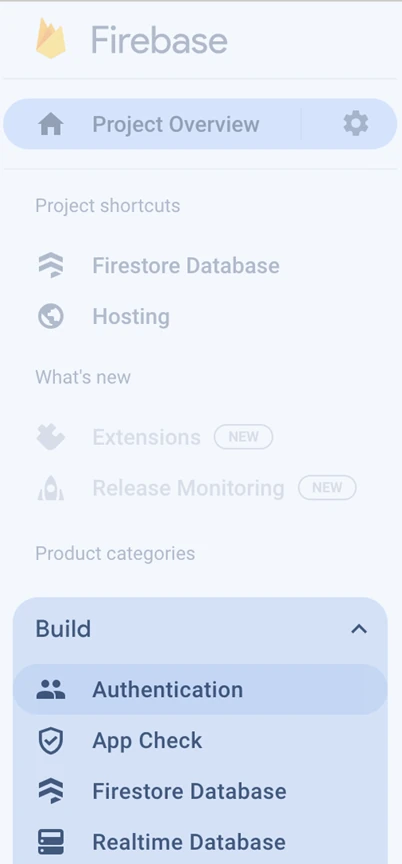 -
Click Getr Started
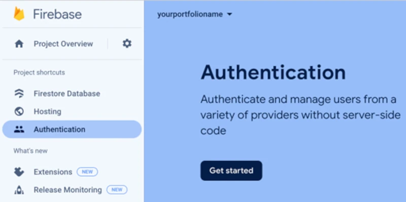 -
Select Google under authentication providers
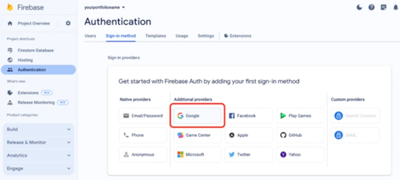 -
Click Enable on the toggle so that the box is checked
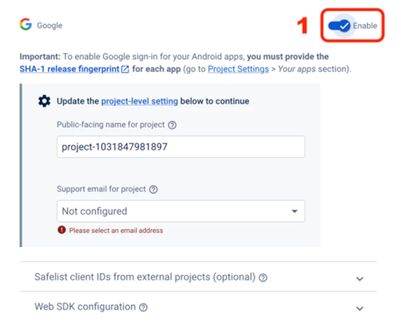 -
Leave the default for the project name and select your email in the Support email for project
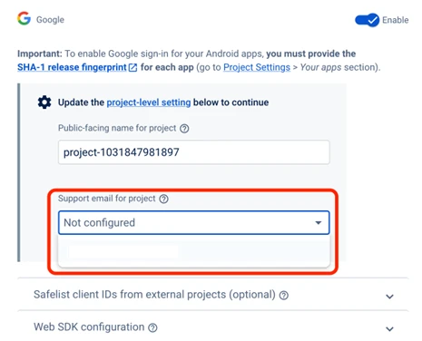 -
Click Save
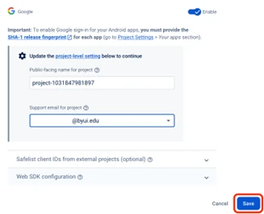
Step 3 - Update firebase database rules
-
To add new projects/data to your database, the rules need to allow write or save for authenticated users (before we were not authenticated). To fix it, go to the database by clicking on Firestore Database and then click on Rules
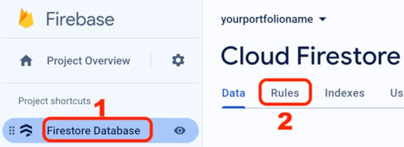 -
Click in the box to edit it. Change ONLY this one line of code that is there from this (or change the = to !)
-
CHANGE THIS (allow write access if they are not authenticated):
allow read, write: if request.auth == null; -
TO THIS (allow write access if they are authenticated):
allow read, write: if request.auth != null;
-
-
By changing that one line from == to !=, a Publish button should appear. Click Publish. It should look like this below
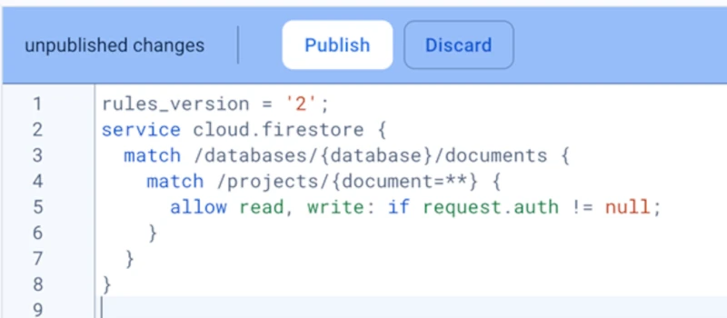 -
Wait a minute for the changes to take effect.
Step 4 - Download the new code and webpages for authentication
-
In Visual Studio Code, open the project we have been working on - it might show up under Recent.

-
ChatGPT generated some code, but we also had to add some code and fix some bugs. We are going to just download them and put them in your project to save time and possible variations from ChatGPT and to avoid bugs. If you would like to figure it out on your own, that would be great.
-
Open Visual Studio Code and download this file for your operating system:
(Windows) https://byui-cloud.github.io/itm101-course/week05/week5.bat
(Mac/Apple) https://byui-cloud.github.io/itm101-course/week05/week5.sh
Copy the file into your project folder (make sure it is at the highest level in your project folder) and run it in the Visual Studio Code terminal
(Windows) Run it with: ./week6.bat
(Mac/Apple) Run it with: ./week6.sh
Those files download these files that we need for this week (dont run these if the week6.bat/week6.sh file worked):
curl -O https://byui-cloud.github.io/itm101-course/week06/firestore.rulescd publiccurl -O https://byui-cloud.github.io/itm101-course/week06/cr.htmlcurl -O https://byui-cloud.github.io/itm101-course/week06/crd.htmlcurl -O https://byui-cloud.github.io/itm101-course/week06/crud.htmlcurl -O https://byui-cloud.github.io/itm101-course/week06/favicon.icocurl -O https://byui-cloud.github.io/itm101-course/week06/logo.webpcd ..
Step 5 - Run `firebase deploy` to Firebase Hosting again to save changes
-
In your Visual Studio Code terminal, type firebase deploy (#1 in the image below) and hit enter each time as needed to save your changes in your code and push it up to Google Firebase Hosting.

-
Make sure to add the name of your file (ex: cr.html) to the end of the URL like this BUT REPLACE YOUR URL WITH YOURS: https://yourportfolioname.web.app/cr.html
// All software and systems should make it so that any content has the ability to Create, Read, Update, Delete = CRUD https://yourportfolioname.web.app/crd.html https://yourportfolioname.web.app/crud.html
-
Try logging in and playing with the various webpages above. Have your buddy or someone at your table login with their google account and see how they can edit and delete projects. We need to limit that to specific users in the next step. It should look like this
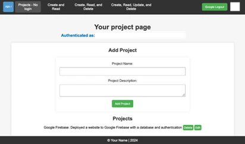
It should provide you with the URL for your site in the terminal after you run firebase deploy - see the Hosting URL in the red circle above and copy that URL and put it in your browser tab and go to it
Step 6 - Secure your website to only allow you to edit and view the projects - by UID
-
In Firebase - Firestore Database settings, change your firebase rules to only allow you to edit (write) and view (read) the database. To accomplish this, you need to login to the website of YOUR URL, then get the UID from your Firebase authentication, and then put that UID into your Firestore Database rules.
-
First, you need to obtain the UID (unique identifier) of your Google user. Login to your webpage above first so it shows you authenticated as a user
-
https://yourportfolioname.web.app/crud.html (USE YOUR URL instead)
-
-
Obtain the UID
-
Click Firestore Authentication under Build (you may need to expand the Build section by clicking on it)
-
On the Authentication page, click on Users
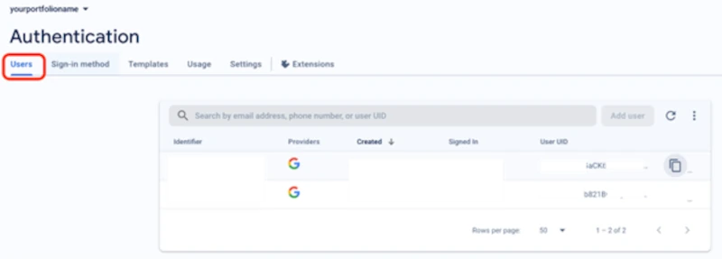 -
Find your username@byui.edu in the list. It will be the only one and click on the Copy UID icon
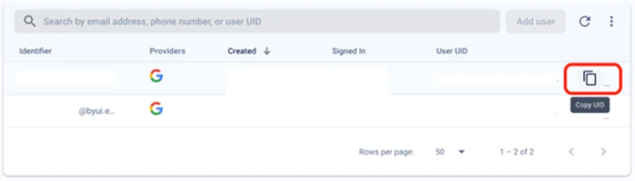 -
That is the unique ID (similar to your social security number or student I-number, but for this Google project). You will put this in your firestore database rules
-
This is what that would look like (BUT REPLACE THE ORANGE TEXT IN THE LIST WITH YOUR UID - notice we added auth.uid in orange):
rules_version = '2';
service cloud.firestore {
match /databases/{database}/documents {
match /projects/{document=**} {
allow read, write: if request.auth.uid in ['Wssjkl9897d789df98d7djnnvB2'];
}
}
}
-
Step 7 - Test your database and site with authentication
-
Test it and see if your user can edit and view projects. Have your buddy or someone at your table see if they can go to your URL and edit the projects
-
https://yourportfolioname.web.app/crud.html (USE YOUR URL instead)
-
You could use another personal gmail account for testing too.
-
-
It should look something like this below. You should be able to add projects to the list and they should pop up at the bottom of the webpage
-
Add a project Name and a Project Description to test the functionality and click Add Project
-
If the project is added and appears below the Projects title, you did it!
Congratulations! You added authentication to Firebase Hosting and a Database and you secured it to your user instead of all Google users!
Troubleshooting & Common Problems
If the database was not working
-
Follow the instructions from last week.
You cant edit projects on the page from last week. That is because we changed the firebase rules on this project to allow only authenticated users to read and write to the database
If you cannot edit projects
-
Make sure you are on the crud.html pages and not the page from last week.
-
You may need to wait for the firebase rules to finish being applied or clear your cache. If it still doesnt work, wait a few minutes and do a SHIFT + refresh by pressing SHIFT on your keyboard and click the refresh button in your browser while holding it (that will clear your browser cache)

If New Projects Don't Show Up
-
It could be that your database permissions are not working. To fix it, go to the database by clicking on Firestore Database and then click on Rules. You may need the other rules that have the UID - See Step 6 for that
Permission Errors or firebase installation not working
-
(Mac/Apple) You may need to run the sudo command in front of the firebase installation commands and/or other commands in the terminal
(Windows) You may need to run the terminal commands in a command prompt window instead or in powershell.
(Windows) When you search for command prompt click on the run as administrator option.
Authentication never works
-
You might open the inspector in your browser by right-clicking on the web page, but not on an image and select Inspect
Click on the Console log. If you get this error - do Step 2 Add authentication
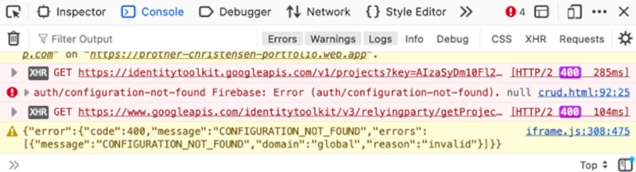
The website doesnt load the styles and looks basic, but only the words appear
-
If you didnt do the code from the previous weeks, you may need to download the styles.css files.
-
Open the terminal in your Visual Studio Code and paste these commands
mkdir stylescd stylescurl -O https://byui-cloud.github.io/itm101-course/week05/styles.csscd ..cd ..
-
Can't get the files to download
-
Open Visual Studio Code and download this file for your operating system
-
(Windows) https://byui-cloud.github.io/itm101-course/week06/week6.bat
-
(Mac/Apple) https://byui-cloud.github.io/itm101-course/week06/week6.sh
-
Copy the file into your project folder (make sure it is at the highest level in your project folder) and run it in the Visual Studio Code terminal
-
(Windows) Run it with: ./week6.bat
-
(Mac/Apple) Run it with: ./week6.sh
-
Styles still aren't working
- Make sure the html files have a link to the styles.css in the code:
<link rel="stylesheet" href="styles.css"> - Check to see if the styles.css file is in the same folder as the index.html folder or make sure the link to it has the folder listed if needed:
<link rel="stylesheet" href="css/styles.css">
Learning more - Adding more users to your firebase rules
Want to learn more about user and identity management? Take CYBER450 Identity and Access Management.
Want to learn more about Cybersecurity? Take CYBER201
Build your resume: Limited user access to firestore database with UIDs
Build your resume (FUTURE project): Implemented AWS Cognito for authentication on website deployed in an S3 bucket
Try a Rick Roll (see the comments in the crud.html file)
Update the version of Firebase in the crud.html file
Want to add more users to your list that can edit/read, edit your authentication rule and replace the orange with the two or more UIDs separated by a comma
allow read, write: if request.auth.uid in ['Wssjkl9897d789df98d7djnnvB2', 'Wssjkl9897d789df98d7djnnvB3'];
More details on various rules you could do can be found here: https://stackoverflow.com/questions/56510745/firebaseerror-code-permission-denied-missing-or-insufficient-permissions
This one is really bad on production but can be used for testing - read and write for anyone
service cloud.firestore {
match /databases/{database}/documents {
match /{document=**} {
allow read, write;
}
}
}
This one allows anyone to read and write to products but only write to projects:
rules_version = '2';
service cloud.firestore {
match /databases/{database}/documents {
match /products/{document=**} {
allow read, write;
}
match /projects/{document=**} {
allow read;
allow write: if request.auth.uid in ['hF4YgV1gbrdEHmaE9cNDEC9CWvw2'];
}
}
}
Here is another example:
rules_version = '2';
service cloud.firestore {
match /databases/{database}/documents {
match /{document=**} {
allow read: if true;
allow create, update, delete, write: if request.auth != null;
//allow create, update, delete, write: if request.auth != null && request.auth.uid == userIdAdmin;
}
}
}
Watch a video on more rules